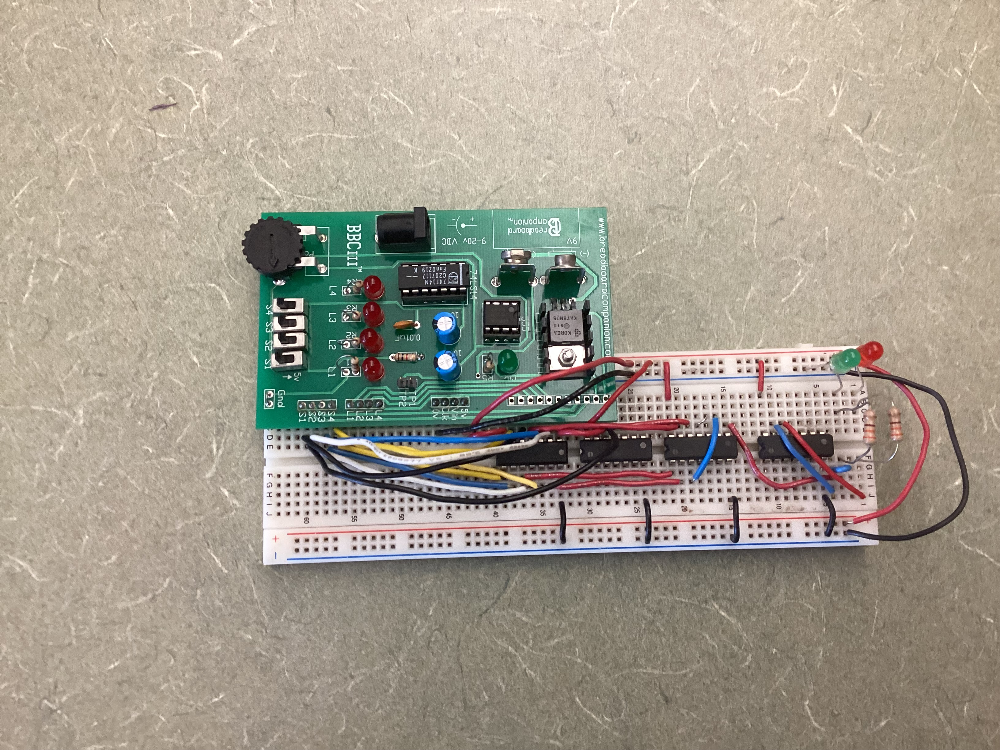
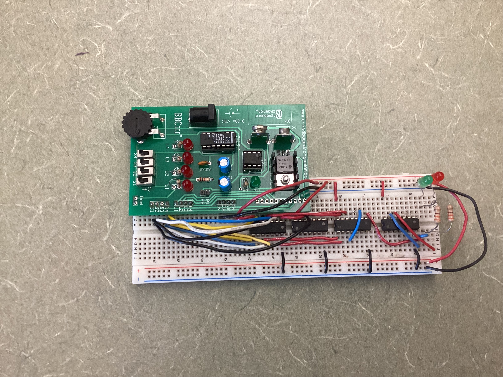

Design Process
Project Overview
In this project, I created a vote tracker that gave the final voting result
based on the inputs of a president, vice-president, secretary, and treasurer.
It is supposed to be a secure way to vote without any discrepencies as
to the legitimacy of the result.
Only 2-input AND gates (74LS08), OR gates (74LS32),
and NOT/inverter gates (74LS04) are available.
In the case of a tie, the President's vote counts.
Additionally, there is no "opt out" of voting.
Truth Table with Boolean Algebra
This truth table lists all possible outcomes from the voting.
It allows us to see patterns in the output that could eventually be simplified using boolean algebra.
In a truth table, there are 2^n rows, where n is the number of input variables.
For example, here there are 4 input varaibles (P, V, S, and T), so there are 2^4 = 16 rows.
Additionally, in the case of a tie, the President's vote is the deciding factor.
This is seen in the truth table when it is:
* 1001: P AND NOT V AND NOT S AND T
* 1010: P AND NOT V AND S AND NOT T
* 1100: P AND V AND NOT S AND NOT T.
Unsimplified Circuit
Boolean Algebra Simplification
Simplified Circuit
Bill of Materials
| Component | Quantity |
| 74LS08 2-input AND Gate | 2 |
| 74LS32 2-input OR Gate | 1 |
| 74LS04 NOT/inverter Gate | 1, OPTIONAL |
| Red LED | 1, OPTIONAL |
| Green LED | 1 |
| 330 Ohm Resistor | 2, 1 is optional for red LED |
| Wires | About 30 |
Breadboarding
 
